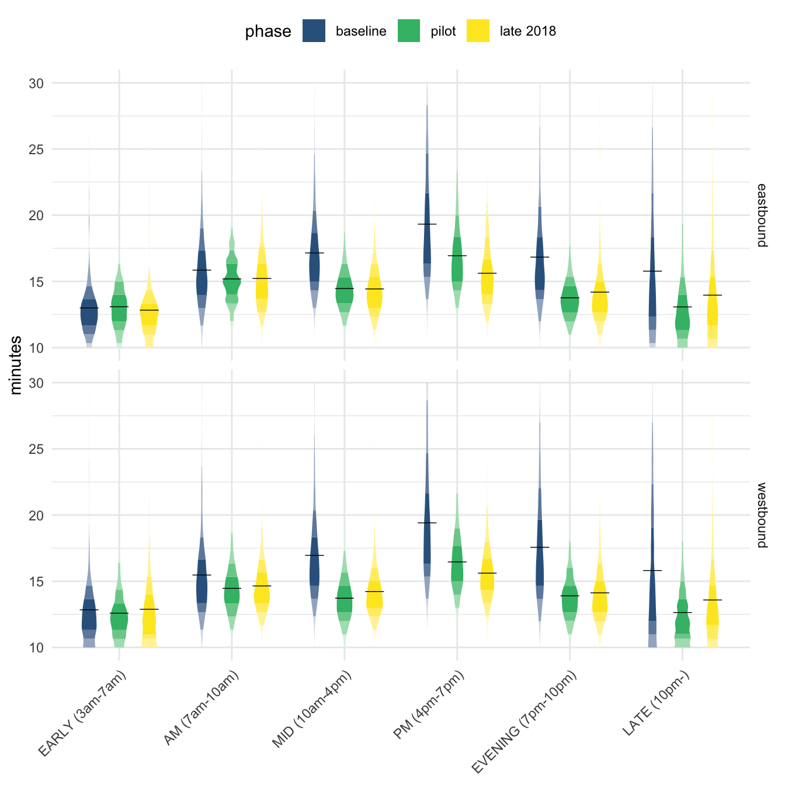

![]()

Robert Arku (PhD Student at the University of Toronto) and I are exploring the association between transit accessibility and real estate through an analysis of the King Street Transit Priority Corridor project in Toronto. As part of this, we are estimating the change in streetcar travel times along the corridor using a database of disaggregate streetcar travel times from the TTC and City of Toronto. To coincide with migrating my site over to a Quarto webpage, this seemed like a good topic through which to explore computational blog posts made using RStudio.
Photo by TheTrolleyPole via Wikimedia Commons
{kind=link}
King Street Transit Priority Corridor
The Transit Priority corridor launched as a pilot project on November 12, 2017, with the primary objective of improving transit service along a 2.6km stretch of King Street between Bathurst and Jarvis Streets in downtown Toronto (Figure 2).
Image courtesy of the City of Toronto
Transit priority was achieved by restricting through-movements and left turns for private vehicles, removing on-street parking, and giving priority transit vehicles (Figure 3). Streetscape improvements such as seating, patios, public art, bicycle parking, and parkettes made the corridor more pedestrian- and cyclist-friendly.
Image courtesy of the City of Toronto
As a pilot project, the City of Toronto collected a wealth of data related to transit vehicle performance, traffic, pedestrian and cyclist volumes, business performance, and stakeholder feedback along the corridor and posted regular updates through a project dashboard. One of these datasets is streetcar travel times collected using the TTC’s Communication and Information System (CIS) that tracks transit vehicle movements throughout the city.
With regards to primary objective of increasing travel speeds and the reliability of streetcar services along the corridor, previous analyses conducted by the City and others (e.g. 1; 2) have examined CIS and GPS data and concluded that the implementation of the priority corridor generally resulted in decreases in travel times and improvements to service reliability. We will follow their lead to calculate the change in travel times across the pre-pilot and pilot period phases from the CIS data.
Load TTC CIS Data
library(tidyverse)
library(lubridate)
library(purrr)
library(gt)
library(opendatatoronto)The first step is to use the {opendatatoronto} package to fetch the resources associated with the disaggregate streetcar headway and travel time data package:
package_resources <- list_package_resources("e74ba0ba-07c8-4a18-bac9-57bd2b9698c1")
package_resources %>% glimpse()Rows: 3
Columns: 4
$ name <chr> "ttc-king-st-pilot-disaggregate-weekday-travel-time-2017…
$ id <chr> "dbe81d22-d5a4-49db-a454-aad69e1e0140", "5df19475-bc6c-4…
$ format <chr> "XLSX", "XLSX", "CSV"
$ last_modified <date> 2019-07-23, 2019-07-23, 2019-07-23There are three data files within this package: travel times and headways in .xlsx format and a summary .csv file. Let’s get the travel time resource using its resource ID and take a glimpse:
resource_id <- package_resources %>%
filter(name == "ttc-king-st-pilot-disaggregate-weekday-travel-time-2017-2018-xlsx") %>%
pull(id)
resource <- get_resource(resource_id)
resource %>% glimpse()List of 3
$ Sheet1: tibble [342,759 × 14] (S3: tbl_df/tbl/data.frame)
..$ TripID : num [1:342759] 16053362 16053365 16053215 16052346 16052017 ...
..$ RouteNumber : chr [1:342759] "304" "304" "504" "504" ...
..$ VehicleNumber: chr [1:342759] "4179" "4179" "4157" "4076" ...
..$ RunNumber : num [1:342759] 15 15 1 15 35 30 19 31 7 21 ...
..$ Direction : chr [1:342759] "EAST" "WEST" "WEST" "EAST" ...
..$ FromStopAbbr : chr [1:342759] "BKIN" "KGJV" "KGJV" "BKIN" ...
..$ FromStopName : chr [1:342759] "KING ST WEST AT BATHURST ST" "KING ST EAST AT JARVIS ST" "KING ST EAST AT JARVIS ST" "KING ST WEST AT BATHURST ST" ...
..$ ToStopAbbr : chr [1:342759] "KGJV" "BKIN" "BKIN" "KGJV" ...
..$ ToStopName : chr [1:342759] "KING ST EAST AT JARVIS ST" "KING ST WEST AT BATHURST ST" "KING ST WEST AT BATHURST ST" "KING ST EAST AT JARVIS ST" ...
..$ TimePeriod : chr [1:342759] "0-EARLY (3am-7am)" "0-EARLY (3am-7am)" "0-EARLY (3am-7am)" "0-EARLY (3am-7am)" ...
..$ ObservedDate : chr [1:342759] "2017-01-03" "2017-01-03" "2017-01-03" "2017-01-03" ...
..$ TripTime : POSIXct[1:342759], format: "2017-01-03 03:43:00" "2017-01-03 04:42:40" ...
..$ RunningTime : num [1:342759] 14.33 10 9.67 12.67 12.33 ...
..$ Speed : num [1:342759] 10.8 15.2 15.5 11.7 12.2 ...
$ Sheet2: tibble [0 × 0] (S3: tbl_df/tbl/data.frame)
Named list()
$ Sheet3: tibble [0 × 0] (S3: tbl_df/tbl/data.frame)
Named list()While the {opendatatoronto} package downloads the data in an R-friendly format, because the original streetcar travel times file was a .xlsx, it looks like the returned data resource is actually a list of three tibbles structured around Excel sheets (e.g. Sheet1, Sheet2, Sheet3). The streetcar travel times data is in Sheet1, so next we will use pluck from the {purrr} package to extract the trip times:
trip_times <- resource %>% pluck("Sheet1") Prepare Data
The CIS data contains travel times and speeds for eastbound and westbound streetcar trips across the Pilot corridor along King Street between stops at Bathurst and Jarvis Streets. The trips are grouped into major service time periods (e.g. AM Peak, PM Peak, etc.) and the data also includes general information such as the streetcar route number and vehicle and trip IDs. To prepare the travel times for further analysis, we will do some data operations such as converting the ObservedDate from a character type to a proper date, getting the day of the week, and some factor operations including creating a variable corresponding to the baseline and pilot time periods:
trip_times <- trip_times %>%
mutate(
# make into proper datetime
ObservedDate = as_date(ObservedDate),
# get day of week to make sure no weekends
day_name = wday(ObservedDate, label = TRUE),
TimePeriod = str_sub(TimePeriod, start = 3),
TimePeriod = as.factor(TimePeriod),
TimePeriod = fct_relevel(TimePeriod,
c("EARLY (3am-7am)",
"AM (7am-10am)",
"MID (10am-4pm)",
"PM (4pm-7pm)",
"EVENING (7pm-10pm)",
"LATE (10pm-)")),
# classify baseline and pilot time periods
phase = case_when(ObservedDate > as_date("2017-11-12") ~ "pilot",
TRUE ~ "baseline"),
phase = as.factor(phase),
phase = fct_relevel(phase, c("baseline", "pilot")),
# recode direction
Direction = fct_recode(Direction, eastbound = "EAST", westbound = "WEST"))The final step is to filter the trip times data down to trips that occurred between the start of September 2017 and the end of January 2018. This corresponds to about 2.5 months of data on either side of the pilot implementation on November 12, 2017.
filtered_trip_times <- trip_times %>%
filter(between(x = ObservedDate,
left = as_date("2017-09-04"),
right = as_date("2018-01-31")),
day_name != "Sat") Results
Figure 4 shows the final plot of travel times before and after the introduction of the pilot. It certainly looks as though the implementation of the pilot reduced average travel times and decreased travel time variability within this time window.
ggplot(filtered_trip_times, aes(x = ObservedDate, y = RunningTime)) +
geom_point(position = position_jitter(seed = 1, width = 0.2),
size = 0.2, col = "grey80", alpha = 0.5) +
geom_smooth(se = FALSE, method = "gam",
formula = y ~ s(log(x)), aes(colour = phase)) +
facet_grid(rows = vars(Direction)) +
geom_vline(aes(xintercept = lubridate::as_date("2017-11-12")),
linetype = "dashed", size = 0.25) +
ylim(c(0, 80)) +
ylab("minutes") +
#ggtitle("Priority Corridor Travel Times") +
scale_colour_manual(values = c("#33638DFF", "#3CBB75FF")) +
theme_minimal() +
theme(axis.title.x=element_blank(),
legend.position="bottom")
This is generally confirmed by calculating the mean travel times in the eastbound and westbound directions across phases (Table 1). Here we see a decrease in travel times across every time period other than the 3am-7am Early service period, with the biggest difference in the PM peak.
filtered_trip_times %>%
group_by(phase, TimePeriod, Direction) %>%
summarize(mean_tt = mean(RunningTime)) %>%
# double pivot to get travel times by direction and phase
pivot_wider(names_from = Direction, values_from = mean_tt) %>%
pivot_wider(names_from = phase, values_from = c("eastbound", "westbound")) %>%
ungroup() %>%
# calculate travel time differences and relocate eastbound result for table
mutate(eastbound_difference = eastbound_pilot - eastbound_baseline,
westbound_difference = westbound_pilot - westbound_baseline) %>%
relocate(eastbound_difference, .after = eastbound_pilot) %>%
# create a gt table
gt(rowname_col = "TimePeriod") %>%
# create table grouping based on direction - split at delimiter e.g. eastbound_pilot
tab_spanner_delim(delim = "_") %>%
# format table numbers
fmt_number(contains(c("baseline", "pilot", "difference")), decimals = 1)| eastbound | westbound | |||||
|---|---|---|---|---|---|---|
| baseline | pilot | difference | baseline | pilot | difference | |
| EARLY (3am-7am) | 12.9 | 13.0 | 0.1 | 12.4 | 12.4 | 0.1 |
| AM (7am-10am) | 16.3 | 15.2 | −1.1 | 15.8 | 14.5 | −1.3 |
| MID (10am-4pm) | 17.8 | 14.5 | −3.2 | 17.2 | 13.8 | −3.4 |
| PM (4pm-7pm) | 21.3 | 17.0 | −4.2 | 21.2 | 16.5 | −4.7 |
| EVENING (7pm-10pm) | 17.3 | 13.8 | −3.5 | 18.1 | 13.9 | −4.2 |
| LATE (10pm-) | 15.8 | 12.8 | −3.0 | 15.4 | 12.1 | −3.2 |
While some special events in the fall of 2017, such as the Toronto International Film Festival, impact the travel times in this baseline period, doing the same analysis to compare the baseline period with data from one year later (September to end of October 2018) shows stability in the reduced travel times over the service periods (Figure 5).
filtered_trip_times_late_2018 <- trip_times %>%
filter(between(x = ObservedDate,
left = as_date("2018-09-01"),
right = as_date("2018-10-31")),
day_name != "Sat") %>%
mutate(phase = "late 2018") %>%
bind_rows(filtered_trip_times) %>%
group_by(phase, TimePeriod, Direction) %>%
summarize(mean_tt = mean(RunningTime))
ggplot(filtered_trip_times_late_2018, aes(x = TimePeriod, y = mean_tt, group = phase)) +
geom_line(aes(col = phase), size = 1) +
facet_grid(rows = vars(as.factor(Direction))) +
scale_colour_manual(values = c("#33638DFF", "#3CBB75FF", "#FDE725FF")) +
scale_y_continuous(limits = c(11.5, 21.5)) +
ylab("mean travel time") +
theme_minimal() +
theme(axis.title.x = element_blank(),
axis.text.x = element_text(angle = 45, vjust = 1, hjust=1))
The results from this analysis are feeding into our ongoing work looking into how changes in travel times contribute to changes in accessibility and real estate prices - more on this soon!